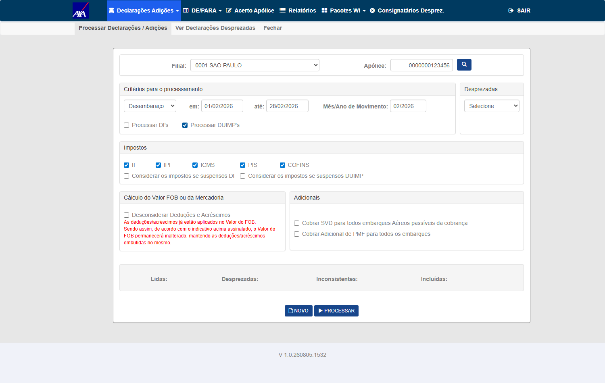
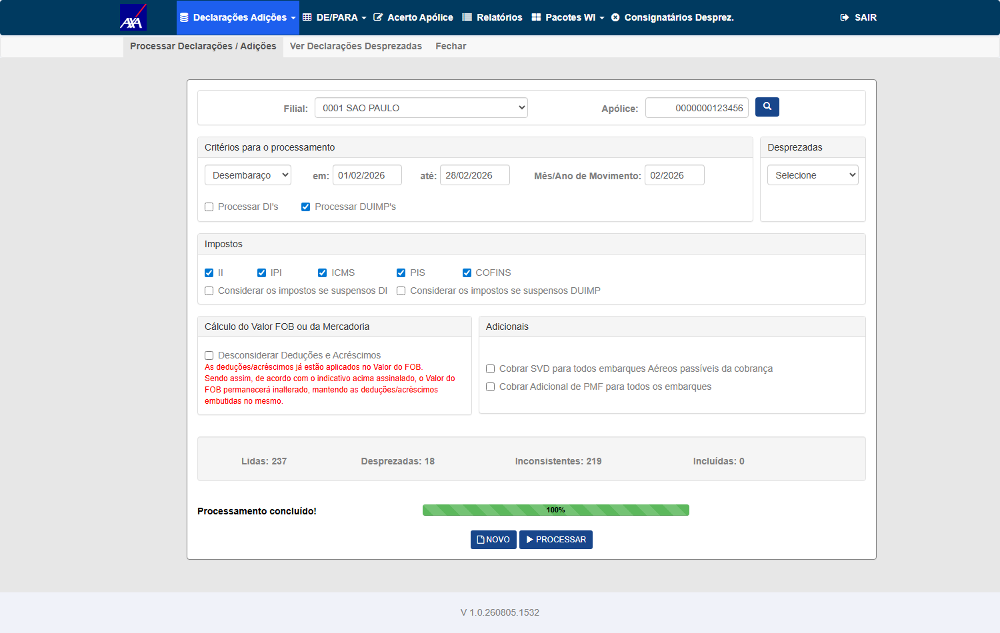

Grupo A — Flag OFF (regressão — executável)
1 CT ▾Tipo
Regressão — com a flag AgrupamentoAverbacaoHabilitado desligada, não há agregação, então cada linha equivale a 1 item e os contadores devem manter o comportamento anterior.
Pré-condições
- CITWEB AXA HML, Interface WI/Siscomex — Processamento de DI's/DUIMP's
- Flag
AgrupamentoAverbacaoHabilitadoOFF - Arquivo/pacote DI sem linhas agregadas (q_itn_agp = 1 por linha)
Passos
- Processar um lote de DI's com a flag OFF
- Observar os contadores lblDILida / lblDIDesprezada / lblDIInconsistente / lblDIIncluida durante e ao fim do processamento
- Comparar com o nº de linhas do arquivo
Resultado Esperado
testes-automatizados/sprint-10/pbi-7582/ct_wis_isolamento_contadores_di.py (mesmo fluxo Processamento; Fase 0 + T1).

Grupo B — Flag ON (DUIMP agregado — diferido até migration/flag/Worker em HML)
5 CT ▾Objetivo
Núcleo do card: com a flag ON e uma linha agregada representando vários itens (q_itn_agp>1), validar que o contador em tela reflete o nº de averbações, conforme regra decidida pela PO (24/07) — não a soma dos itens do agrupamento. (O CA original pedia somar q_itn_agp; a PO redefiniu para averbações — daí o ponto de atenção de possível bug de contagem.)
Pré-condições
- Flag
AgrupamentoAverbacaoHabilitadoON + migration aplicada + Worker gravando linhas agregadas em HML - Pacote DUIMP com ao menos 1 linha agregada com q_itn_agp > 1 (ex.: 1 linha = 5 itens)
- Serviço de expansão #7802 publicado
Passos
- Processar o pacote DUIMP com linha(s) agregada(s)
- Verificar lblDIIncluida ao fim: deve refletir a soma de q_itn_agp (itens reais), não o nº de linhas
- Confirmar via SQL a soma de q_itn_agp das linhas processadas
Resultado Esperado
AtualizaContadoresDIPorItens soma q_itn_agp = itens, o que contraria a regra).O #QA-STATUS: BLOQUEADO de 28/07 dizia "CTs Worker-dependentes SEM massa para
validar". Não vale mais. Medição de 04/08 na AXA HML (tb_itf_smx_dcl_pnd_dui):
270 linhas com q_itn_agp ≥ 2, a maior com 145 itens. O José havia
avisado no card em 29/07 11:35 que o WorkerDUIMP tinha dois serviços apontando para o mesmo banco
e que já estava rodando — aviso que ficou 6 dias sem resposta do QA.
Massa que discrimina o fix: apólice 3762900634322 · filial
3762 · desembaraço 06/2026 → 72 linhas agregadas = 1.401 itens
(84 pendentes no período, 0 averbações hoje). Contador ~72 → APROVADO · ~1.401 → REPROVADO.
O oráculo não sai da tela (lição do #7762 no mesmo dia): o nº de averbações
é o delta de tb_mov_avb_int_cit antes/depois; a soma de itens vem de
SUM(q_itn_agp). Script:
testes-automatizados/sprint-11-citweb/pbi-7803/ct_ctd_002_003_contador_agregada.py.
Onde parei (3 tentativas, INCONCLUSIVO — não é REPROVADO): com filial 3762, critério Desembaraço, 01→30/06/2026 e só Processar DUIMP's, o modal de confirmação aparece e é confirmado, mas nada processa — contadores vazios, 0 averbações criadas, pendentes inalterados (84 → 84).
Massa: apólice 100622001 · filial 0001 · referência
04/2026 · 5 linhas agregadas representando 71 itens.
| Medida | Valor | Origem |
|---|---|---|
| Contadores na tela | Lidas 14 · Desprezadas 0 · Inconsistentes 1 · Incluídas 13 | .well ao vivo + hidden no post-back |
| Averbações criadas | 13 | delta de tb_mov_avb_int_cit (146 → 159) — medido no banco, não lido da tela |
| Soma de itens das agregadas | 71 | SUM(q_itn_agp) |
Veredito: o contador exibe o nº de AVERBAÇÕES (13), não a soma dos itens do
agrupamento (71). É exatamente a regra que a Fabiola definiu no Gate 2 de 24/07 e que o helper
AtualizaContadoresDIPorAverbacao implementa. Incluídas = 13 = delta de averbações, e
Lidas = 14 = declarações lidas (não 71 itens) — coerente também em Lidas.
Precisão sobre o CT-CTD-003: este run exercitou 3 das 4 categorias — Lidas (14), Inconsistentes (1) e Incluídas (13). Desprezadas veio 0, então essa categoria não foi exercitada. O CT-CTD-003 fica parcialmente validado; para fechá-lo falta massa que gere declaração desprezada agregada. Não vou marcá-lo como aprovado com 3 de 4.
Rodei de novo com apólice 3762900634322 · filial 3762 · referência
03/2026 — 37 linhas agregadas representando 555 itens, 47 declarações no
período. Resultado na tela: Lidas: 47 · Desprezadas: 0 ·
Inconsistentes: 47 · Incluídas: 0.
O sistema leu e rejeitou tudo (0 averbações criadas, massa intacta, e nenhum protocolo gravado — os mais recentes da apólice são de 03/08 17:29). Não sei ainda por que as 47 vieram inconsistentes; não estou chamando de defeito.
O que este run prova, e é o que interessa ao CT: o contador
Inconsistentes = 47 é o número de declarações, não a soma de itens
(555). Com os dois datasets, a regra "contador = averbações/declarações, não itens" está
confirmada em 3 categorias (Lidas, Inconsistentes, Incluídas) e em dois conjuntos de
massa independentes — o segundo com discriminação bem mais forte (47 × 555 contra 14 × 71).
Desprezadas segue em 0 nos dois, então o CT-CTD-003 continua parcial.
Erro do meu script, corrigido: ele reportou
"nada foi processado" para este run, porque a lógica de veredito olhava só Incluídas=0 e
delta=0. Com Lidas=47 houve processamento, sim — o que não houve foi inclusão.
Passou a ler o contador de Lidas antes de decidir.
⚠️ A verificar (sem afirmar defeito): a tela reportou 47 inconsistentes e não gravou nenhum registro de protocolo. Se o protocolo deveria registrar rejeições, isso é lacuna de rastreabilidade; se a rejeição ocorre antes do estágio de protocolo, é o desenho. Vai junto com o outro achado em aberto (32 declarações com "Erro ao incluir averbação agrupada").
Evidências: ev_CT-CTD-002_01_filtro_duimp_*.png,
ev_CT-CTD-002_02_contadores_final_*.png e resultado_*.json (com as amostras ao vivo do
.well) em evidencias/CT-CTD-002/. Script:
testes-automatizados/sprint-11-citweb/pbi-7803/ct_ctd_002_003_contador_agregada.py.
O processamento só roda quando as três condições valem. O sistema anuncia todas as três; eu não estava lendo a mensagem depois do POST:
| # | Guard | O que o sistema faz |
|---|---|---|
| 1 | Filial tem de ser a da apólice | com a filial errada (default 0001) o Processar não abre nem o modal, sem mensagem |
| 2 | Vigência — mês/ano de referência dentro da vigência da apólice | DIProcessamentoController.cs:534 → aviso "Ano/Mês de referência fora da vigência da apólice" e return |
| 3 | Origem SISCOMEX na apólice | DIProcessamentoController.cs:185 → aviso "Apólice deve possuir a origem SISCOMEX" e return |
⚠️ A coluna da origem é tb_apo_cit.e_ori_avb — não está em
tb_apo_int_cit (lá existe e_avb, que é o tipo de apólice, outra coisa). Só
34 apólices da AXA HML têm origem SISCOMEX. Query da massa boa: agregada com
q_itn_agp≥2 + apólice vigente no desembaraço + e_ori_avb='SISCOMEX' → 12 grupos.
Falhas minhas encadeadas: usei referência 06/2026 numa apólice que expira 31/03/2026 — violando a minha própria regra de vigência de massa; e só passei a ler o alerta da tela depois do POST na 4ª execução, que foi justamente a que funcionou.
A conclusão "os contadores vazios eram o comportamento correto porque
sts_prc='C'" estava errada: o seletor
(InterfaceSiscomexDeclaracaoPendenteRepository.ListarPorData:511) não consulta
sts_prc. A causa real eram os guards 2 e 3 acima.
Eu havia levantado duas hipóteses e perguntado ao José o significado de
e_dcl_smx. Retirei a pergunta — respondi pelo dado:
- A hipótese do
e_dcl_smxcaiu: cruzando com a tabela de protocolotb_itf_smx_ctl_prc_dui, 100% das declarações têm protocolo — 1.106 com'1'e 121 com'2'. O campo não indica processada/pendente. - Quem responde é o
sts_prc: as 84 declarações da minha massa estão todas comsts_prc='C'— "DUIMP Gravada". Já foram processadas. Não havia nada a processar, e é por isso que os contadores vieram vazios. Comportamento correto para "sem dado", não defeito — o que confirma que marcar INCONCLUSIVO em vez de REPROVADO foi o certo.
O que destrava, e é trabalho do QA: preciso de declaração agregada
ainda não gravada. Recarregar o pacote faz o WorkerDUIMP reingerir as declarações — o
mesmo procedimento descoberto no #7930. Roteiro do próximo ciclo: recarregar o pacote → confirmar por SQL que
existe agregada com q_itn_agp≥2 sem sts_prc='C' → processar → ler os
contadores. Sem dependência de terceiros.
⚠️ Achado lateral (não deste card): das 270 declarações
agregadas da base, 32 estão com sts_prc='D' e a mensagem
"Desprezada - Erro ao incluir averbação agrupada". A mensagem é específica de averbação
agrupada, o que pode interessar ao #7802/#7804 — ou pode ser massa ruim de HML. Não estou afirmando que é
defeito; vou investigar e, se for, abro card próprio com evidência.
⛔ Armadilha nova: a filial precisa ser a da apólice. O
default da tela é 0001; com a filial errada o botão Processar não abre nem o modal,
sem mensagem nenhuma.
3762900634322 · filial 3762 · referência 03/2026A categoria Desprezada foi finalmente exercitada na forma agregada, que é o que faltava — e os contadores contam declarações, não itens.
O que travava este CT, e como foi destravado
O CT ficou parcial por três execuções porque a categoria Desprezadas nunca saía de zero: sem uma desprezada agregada, o contador não discrimina "declarações" de "soma de itens" — numa linha simples 1 declaração = 1 item, e os dois valores coincidem.
A massa não existia, então eu criei — de forma mínima e reversível.
Lendo DIProcessamentoController.cs no branch hml, uma declaração é desprezada quando
(a) a data de saída fica fora da vigência da apólice (linha 1121) ou (b) a apólice está suspensa
(linha 1136). Havia agregadas fora de vigência prontas, mas todas em referências 04–06/2026 — que o
guard 2 (referência dentro da vigência) aborta antes de processar qualquer coisa. Então peguei a
maior agregada de uma referência válida e movi só a data de saída:
declaração 26BR00001806018 · q_itn_agp = 108 itens · referência 03/2026 (dentro da vigência)
d_sda_vgm: 14/01/2026 → 01/12/2024 (fora da vigência 16/01/2025..31/03/2026)
revertido para 14/01/2026 ao fim do teste — verificado por releituraO resultado — discriminação de 47 contra 555
| Contador na tela | Valor | Se contasse ITENS seria |
|---|---|---|
| Lidas | 47 | 565 |
| Desprezadas | 39 | ≥ 108 só pela declaração que eu preparei |
| Inconsistentes | 8 | — |
| Incluídas | 0 | — |
39 + 8 = 47 = o número de declarações do período (37 delas agregadas,
representando 555 itens). A declaração que preparei — sozinha com 108 itens — entrou na categoria Desprezadas
confirmada no banco (i_dpz = 'S') e somou 1, não 108. É a prova direta da regra que a
Fabiola fixou em 24/07: "números = averbações, não itens do agrupamento", agora demonstrada também na
categoria que faltava.
Efeito colateral a saber antes de reusar esta massa: o processamento marcou
i_dpz = 'S' em 39 declarações do período. O seletor exclui i_dpz='S' quando a opção
"processar desprezadas anteriormente" está desligada, então uma próxima rodada nesta massa verá menos linhas.Comando: python ct_ctd_002_003_contador_agregada.py --apolice
3762900634322 --filial 3762 --mesano 03/2026. Nenhum aviso na tela após o POST (os 3 guards passaram).
Objetivo
Verificar que TODOS os 4 contadores (lblDILida, lblDIDesprezada, lblDIInconsistente, lblDIIncluida) refletem o nº de averbações da sua categoria — não a soma de q_itn_agp —, incluindo linhas desprezadas/inconsistentes agregadas.
Pré-condições
- Mesmas do CT-CTD-002
- Pacote com linhas agregadas em cada categoria: incluída, desprezada, inconsistente
Passos
- Processar o pacote com linhas agregadas nas 4 categorias
- Verificar cada contador ao fim vs. a soma de q_itn_agp por categoria (via SQL)
Resultado Esperado
q_itn_agp (itens) por categoria, é REPROVADO.q_itn_agp ≥ 2),
a massa existe, e o que resta é um obstáculo de execução na tela de Processamento — não uma dependência de terceiros.
Este CT roda na mesma passagem do 002, lendo os 4 contadores por categoria.⚠️ Correção do próprio CT (04/08/2026) — a premissa que eu escrevi contradiz a regra aceita
O título e o objetivo originais diziam "mesma soma de q_itn_agp". Está errado: a implementação não soma q_itn_agp nos contadores — e não somar foi uma decisão de negócio, a da Fabiola no Gate 2 (24/07) confirmada pelo Wesley: "números = averbações, não itens do agrupamento". O CT media exatamente o que o código deliberadamente deixou de fazer. Corrigido para o que o CA pede de fato: a contagem não pode divergir por banco.
Evidência lida no ref do ambiente (origin/hml, HEAD 71a7c7554) — InterfaceSTREITI/Controllers/DIProcessamentoController.cs, método AtualizaContadoresDIPorAverbacao:
// Regra de negócio (PO/QA 24/07): contadores = nº de averbações (+1 por linha processada), // não a soma de itens do agrupamento (q_itn_agp). Uma linha agregada conta como 1 averbação. _ = linha; // parâmetro deliberadamente descartado const int qtdAverbacoes = 1; // sempre 1 por linha ... if (incrementarIncluida) Tot_Avb_Incl += qtdAverbacoes;
De quebra, isto confirma o CT-CTD-002 pelo lado do código: contador 13 com 71 itens no pacote é o comportamento especificado, não coincidência.
Objetivo (corrigido)
O CA exige validação em SQL Server e Oracle. Verificar que os contadores produzem o mesmo resultado nos dois bancos.
Pré-condições
- Uma instância HML em Oracle — não existe hoje
- Mesmo pacote DUIMP processado em ambos
Resultado Esperado
1. Não há instância Oracle ao meu alcance. O provider vem do appSetting DataBaseSettings (UtilityDB/DbUtility.cs, switch ORACLE/MYSQL/SQL_SERVER); todas as ~38 bases HML que eu acesso são SQL Server (smt-hom-citweb-*) e não existe chave de conexão Oracle. Isso é ambiente, não massa — o único caso em que a skill admite não-execução.
2. A contagem é provider-independente por construção. O incremento é += 1 em memória, por linha, em C#; não há agregação em SQL. DuimpAgrupamentoDomain.ObterQuantidadeItens também é C# puro (lê a propriedade do model; NULL ou ≤ 0 vira 1). Divergência por banco só entraria pelo SELECT ou pelo mapeamento do reader.
3. O risco residual, nomeado. Em Repository/InterfaceSiscomexDeclaracaoPendenteRepository.cs a coluna é lida de duas formas: via TryLerColuna + Convert.ToInt16 (linha ~1969, robusto) e via reader["q_itn_agp"].ToString().ChecaValueInt16NuloOuVazio() (linha ~815) — esta segunda faz round-trip por string. Em SQL Server a coluna é smallint e o texto sai "5"; se no schema Oracle ela for NUMBER com escala, o texto pode sair com separador decimal ("5,00" em cultura pt-BR) e o parse para Int16 falha. É isso que um teste em Oracle pegaria — fica registrado como o ponto a verificar quando houver instância.
Decisão que não é minha: ou dev/ops disponibiliza um HML Oracle, ou o CA se considera coberto por construção + unit tests, com esta ressalva registrada. Não marco APROVADO por leitura de código — análise estática não é execução.
Os contadores agora chegam ao navegador durante o processamento. O defeito era o gatilho, e o gatilho mudou:
form.submit() → AJAX.
Antes × depois — a mesma medição, os mesmos scripts, a mesma massa
| O que | 04/08 — build .260804.1124 | 05/08 — build .260805.1532 |
|---|---|---|
| Broadcasts de contador durante o processamento | 0 | 252 |
| Intervalo entre broadcasts (mediana) | — | 0,157 s |
Estados distintos dos labels #lblDI* | 1 (tudo de uma vez, no fim) | 205 (mediana 0,218 s entre eles) |
| Barra de progresso | vazia o tempo todo | avança item a item — 0% → 100%, terminando em "Processamento concluído!" |
| Estado final dos contadores | 549/18/219/312 de uma vez só, no POST-BACK | 237/18/219/0 construído incrementalmente, e igual ao último broadcast |
| 1º tráfego SignalR | negotiate 1,6 s depois do render final | 1º contador em t=53,06 s, 4,2 s após a confirmação |
O payload capturado no fio é a prova direta — é a invocação do hub chegando ao cliente, não a batida do long-polling:
t=53,063s {"M":[{"H":"DIProcessamentoHub","M":"ContadoresDI","A":[1,0,0,0]}]}
t=53,969s {"M":[{"H":"DIProcessamentoHub","M":"ContadoresDI","A":[1,0,1,0]}]}
t=54,594s {"M":[{"H":"DIProcessamentoHub","M":"ContadoresDI","A":[2,0,2,0]}]}
t=55,094s {"M":[{"H":"DIProcessamentoHub","M":"ContadoresDI","A":[3,0,3,0]}]} … 252 no totalPor que "0 averbações criadas" aqui é o resultado CORRETO — e não um defeito novo
O oráculo de banco fechou em 408 → 408 averbações e
237 → 237 pendentes: nada foi persistido. Isso exige explicação, e ela é verificável em vez de
suposta. A massa de 02/2026 tinha 549 declarações; a execução de 04/08 incluiu 312
(averbações 96 → 408) e rejeitou o resto — 18 Desprezadas + 219 Inconsistentes = 237,
exatamente o que restou. O que sobrou é, por definição, o conjunto que já falhava.
Confirmado na origem: das 237 residuais, 91 têm erro registrado em
tb_itf_smx_dcl_pnd_err, e são todos de DE/PARA —
"Navio não cadastrado no DE/PARA = HMM CLOVER" (883 ocorrências),
"Mercadoria não cadastrada no DE/PARA = 87169090" (69),
"Embalagem não cadastrada no DE/PARA" (55). É a mesma causa que este plano já havia encerrado como
observação em 04/08.
0 Incluída e o banco criou 0 averbação. Contador e efeito real dizem a mesma coisa. Se a
tela tivesse mostrado incluídas sem gravar nada, aí sim haveria defeito.Último estado dos labels:
237 / 18 / 219 / 0 (Lidas / Desprezadas / Inconsistentes / Incluídas), com a
barra em "Processamento concluído! 100%" em t=114,6 s. O último broadcast do fio, em
t=106,1 s, já carregava ContadoresDI [237,18,219,0] — tela e transporte terminam dizendo
a mesma coisa.
E os números batem com a aritmética da massa: das 549 originais, 312 foram incluídas em 04/08 e restaram 237 = 18 Desprezadas + 219 Inconsistentes. O reteste reprocessou essas 237 e reencontrou as mesmas 18 e as mesmas 219, incluindo zero — que é por que o banco continua em 408 averbações. Contador e efeito real coincidem em cada categoria.
q_itn_agp = 1 — medido: 237 linhas para 237 itens).
Numa linha simples, 1 declaração = 1 item, então o contador de Desprezadas não discrimina "declarações"
de "soma de itens" — que é exatamente o que o CT-CTD-003 precisa provar. Para fechá-lo continua faltando uma
desprezada agregada (q_itn_agp > 1). Não marco o CT-003 como aprovado com a
categoria exercitada na forma que não discrimina.

Trilha completa (252 payloads + 316 amostras de render, com timestamp
monotônico de cada um): evidencias/CT-CTD-005/ct005_medicao_20260805-142342.json. Comando:
python ct_ctd_005_signalr_tempo_real.py --apolice 123456 --mesano 02/2026.
Objetivo
CA: a atualização via SignalR (DIProcessamentoHub.AtualizaContadoresDI) continua em tempo real, sem degradação perceptível de performance.
Registro histórico — a reprovação de 04/08 que originou o #8015
Mantido na íntegra abaixo: é o que fundamentou o #8015 e o que o reteste acima refuta ponto a ponto.
Pré-condições
- Massa com volume relevante · apólice
123456· filial 1 · referência 02/2026 · 549 declarações pendentes (passando os 3 guards da tela)
Passos
- Iniciar o processamento e observar os contadores ao vivo
- Verificar que a atualização é incremental (SignalR) e não só ao final
- Observar travamento/lentidão durante o broadcast
Resultado Esperado
Nenhuma atualização chega ao navegador durante o processamento: os quatro números aparecem juntos quando o POST retorna, e a barra de progresso não sai do zero.
A medição que fecha o caso — janela de ~6 minutos
| O que | Medido |
|---|---|
| Janela de processamento | confirmação t=21,5s → resposta t=378,9s = 5min57s |
| Broadcasts de contador recebidos | ZERO — nenhum ContadoresDI/AddProgress no transporte durante a janela |
Estados dos labels #lblDI* | 1 — 549 / 18 / 219 / 312 de uma vez, em t=379,9s |
| Barra de progresso | #lblProgress e #lblPercentualProgresso vazios o tempo todo |
| 1º tráfego SignalR | negotiate em t=380,5s — 1,6s depois do render final |
| Oráculo no banco | averbações 96 → 408 (+312) · 312 declarações saíram da fila → o processamento funcionou |
| Throughput | 0,65 s/declaração (357s para 549), sem timeout — degradação de performance não é o problema |
Mecanismo, no código de origin/hml (HEAD 71a7c7554)
Views/DIProcessamento/Index.cshtml:217-220 — MyYesFunction() faz
document.getElementById("frmDIProcessamento").submit(), e #btnProcessar é type="submit":
o processamento é um POST de página inteira. A mesma view monta o cliente SignalR no load
($.hubConnection() → createHubProxy('DIProcessamentoHub') → joinGroup(userIdHub)) e assina
on('ContadoresDI', …) e on('AddProgress', …). Ao submeter o formulário, a navegação cancela o
long-polling: o servidor segue emitindo para o grupo do usuário e não há mais cliente escutando. Push existe,
assinatura existe — o gatilho impede a entrega.
Cinco execuções, e o que cada uma corrigiu na minha instrumentação
- Registrei a URL das respostas de
/signalr/em vez do corpo — e o long-polling bate a cada ~0,14s independentemente de haver contador, então "43 frames" não provava nada. - Passei a ler o corpo, mas filtrando
"AtualizaContadores"case-sensitive e supondo"M"como string; no SignalR 2.xMé array. - Teto de 12 amostras cruas escondia justamente o trecho da janela de processamento.
- O nome no fio é o do método do cliente (
ContadoresDI), não o do servidor (AtualizaContadoresDI) — descoberto lendo a view. - Eu amostrava o
.well, que é o render do POST-BACK; quem o SignalR atualiza são os labels#lblDI*. Só depois disso a medição passou a olhar o lugar certo.
Sem essas cinco correções eu teria publicado "0 broadcasts" com instrumentação cega — que é indistinguível de defeito. Script: testes-automatizados/sprint-11-citweb/pbi-7803/ct_ctd_005_signalr_tempo_real.py (mede transporte + labels e falha se não houver broadcast). JSON com a trilha completa de tempos em evidencias/CT-CTD-005/.
Eu havia deixado "219 das 549 voltaram Inconsistentes — não investiguei". Fui atrás. A tabela
tb_itf_smx_dcl_pnd_err registra o motivo de cada um, e a hipótese que eu carregava do CT-CTD-002
(cotação de moeda ausente) não se aplica: fevereiro/2026 tem as 28 cotações de USD (220).
| Motivo | Linhas de erro |
|---|---|
| Navio não cadastrado no DE/PARA | 121 |
| Mercadoria não cadastrada no DE/PARA | 73 |
| Embalagem não cadastrada no DE/PARA | 27 |
| País não cadastrado no DE/PARA | 23 |
Câmbio do Frete na moeda 0 para a data de saída | 6 |
É configuração de DE/PARA da base HML (a massa vem de declarações Siscomex reais, com navios e NCMs que a AXA HML não mapeia) — não é defeito deste card nem do processamento.
E o cross-check saiu de brinde: a contagem de linhas distintas
(declaração + adição + item) com erro registrado hoje dá exatamente 219 — o mesmo número da tela.
Por declaração seriam 91, por declaração+adição 125. Ou seja, o contador conta linha processada,
que é o que o código diz (+1 por linha), e o valor está exato. É a terceira confirmação independente
da regra de contagem: medição do CT-CTD-002, leitura do código e agora a conferência contra a tabela de erros.
Detalhe menor anotado: 6 linhas acusam "Câmbio do Frete na moeda
0" — moeda zero sugere declaração sem código de moeda na origem. Fora do escopo deste card.
Objetivo
Cenário acrescentado a pedido da Fabiola (Gate 2, 24/07): executar o processamento com usuários diferentes simultaneamente. Os processos devem rodar de forma independente, sem um impactar os números exibidos na tela do outro. Valida o isolamento do broadcast SignalR por usuário (grupo userIdHub — mesma mecânica do #7582).
Pré-condições
- CITWEB AXA HML, Interface WI/Siscomex — Processamento de DI's/DUIMP's
- Dois usuários HML distintos, cada um em sua sessão/navegador
- Um pacote/lote para cada usuário (podem ter volumes diferentes)
Passos
- Usuário A inicia o processamento do seu lote
- Enquanto A processa, o Usuário B inicia o processamento do seu lote em outra sessão
- Observar os contadores (Lida/Desprezada/Inconsistente/Incluída) na tela de cada usuário
- Conferir, ao fim, que os números de A refletem só o lote de A e os de B só o lote de B (via SQL por usuário)
Resultado Esperado
userIdHub).pbi-7582/ct_wis_isolamento_contadores_di.py. Resultados: T1/T3/T4 (B ocioso enquanto A processa DI / DI+DUIMP / DUIMP) → contadores de B permanecem vazios (ISOLADO); T2 (A estável enquanto B processa) → A mantém 3/2/1/0 (ESTÁVEL); T5 (concorrência real, A e B processando ao mesmo tempo) → cada um vê os seus 3/2/1/0, sem vazamento cruzado (ISOLADO). Isolamento por userIdHub (SignalR JoinGroup) confirmado.